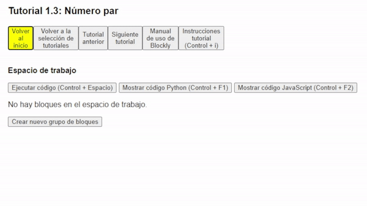
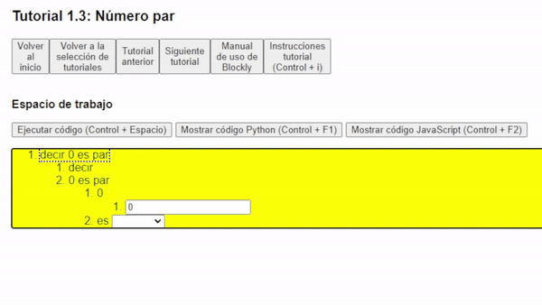
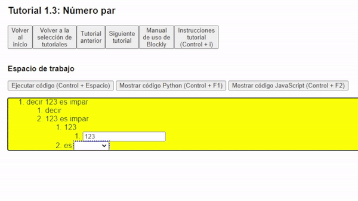

¡Bienvenido al tutorial 1.3 de Accessible Blockly!
Esta es una nueva ventana del navegador, si quieres cambiar de ventana puedes presionar Alt + Tab, y si quieres cerrar esta ventana puedes presionar Control + W.
Recuerda que los pasos deben realizarse en la ventana anterior llamada "Tutorial Blockly", por lo que te recomendamos que tengas ambas ventanas
abiertas para que puedas seguir las instrucciones.
En el tutorial anterior aprendimos a crear un programa que decía una frase al revés.
Para este tutorial aprenderemos a validar propiedades de los números, por ejemplo, si un número es par o impar.
- Como siempre debemos empezar creando un nuevo grupo de bloques y esta vez seleccionar: "decir 0 es par". ~ 
- Al igual que en el tutorial anterior, debemos adentrarnos en los bloques y modificar su contenido, pero esta vez debemos modificar 2 bloques internos: el número 0 y la condición que queremos validar. Primero debemos modificar el número 0, para ello debemos posicionarnos en el bloque interno "0" y presionar Enter, luego debemos escribir el número que queramos y presionar Enter para confirmar.
- Luego, para modificar la condición que queremos validar, debemos posicionarnos en el bloque interno "es" y presionar Enter, así ingresamos a una lista desplegable que podemos explorar con las flechas de arriba y abajo. En esta lista desplegable podemos encontrar diferentes condiciones que podemos validar, para este tutorial seleccionaremos "es impar", pero puedes explorar las otras opciones si quieres. 
- Finalmente ejecutamos el código presionando Control + Espacio y podremos escuchar si el número que ingresamos cumple la propiedad que le pedimos. True significa Verdadero y False significa Falso.
- Recuerda que puedes explorar las distintas propiedades y probar con diferentes números. Además de poder escuchar el código generado en y con las teclas Control + F1 y Control + F2 respectivamente. 
- Ahora ya sabes como validar propiedades de los números, por lo que te invitamos a realizar el siguiente tutorial para aprender a realizar operaciones aritméticas. Pero antes no te olvides de cerrar esta ventana presionando Control + W.